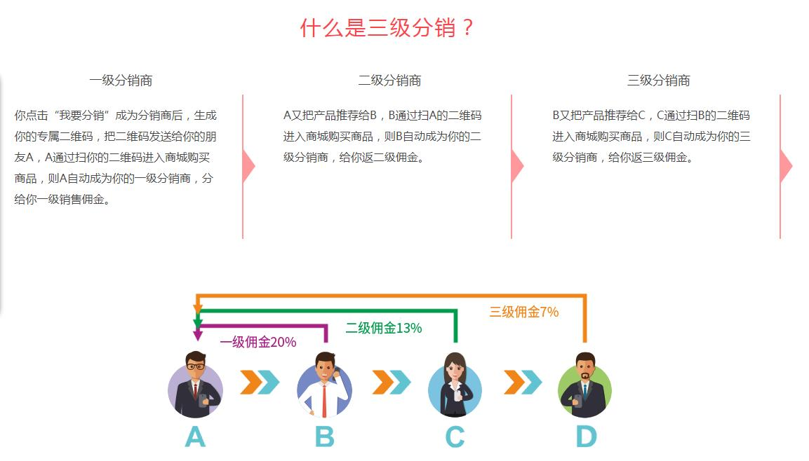

现在智能手机已经普及到每一个人，微信作为频繁使用的APP之一，拥有大量的用户群体，这可以给创业者带来巨大的商机。那么没有经验的人怎么搭建微信公众号商场，该如何搭建，从那里开始，怎么运营微信公众号商城。
搭建微信公众号商城：
1、首先需要注册一个微信公众号，并且要选择“服务号”。
2、进行微信相关认证，需要交300元的认证费用，这样才能够有底部菜单显示的。
3、开通微信支付，这样才能够微信直接收款的。
4、把注册的微信公众号绑定第三方的微商城平台。
微信公众号商城如何营销：
1、积累用户 微信公众号商城建立起来，是需要进行营销的，营销手段还有很多，比如说满减、优惠券、分享赚钱、团购、砍价、积分兑换等等，这些营销手段主要目的是为了类更多的意向客户和关注人群。
2、公众号运营维护 建立好公众号后，不可以放在那里不管关顾，我们需要做一些日常的软文更新，例如养生用品，可以定期发一下养生方面的常识或者推荐养生产品，很多人都很关注的。
3、全民分销 商城的销售网络搭建方式，最好采用分销模式，微信用户都是顾客，他们都可以成为分销商，推广分销现在很多商城都在使用费这中模式，例如，小程序分销商城、微信商城都这使用分销功能。

微信商城规划其实并不复杂，尤其是基本自定义菜单已经确定好，只需要确定内容就OK了。但是，其实一个微信商城装修规划并不那么简单，事前需要分析大量竞争对手的微信商城以及自己品牌的优势特征，然后结合目标受众和一些后期运营思路来进行栏目规划。
商品促销运营和产品策划其实相辅相成，并且和下一步的推广运营三者组成日常运营的核心。很多厂商的微信商城系统都内置了N种促销方案，如订单满额免运费、订单满额加价换购、团购、秒杀等。可单独或联合使用，更可配合积分兑换等功能策划更有创意的促销活动。这些手段组合使用，可以打造爆款产品，实现销售飞跃。
我是搭建微信商城的，问题不清楚朋友的可以联系我微信：kjwenlc， q：3328752804
今天就先分享到这里了，希望本文所述对大家有所帮助